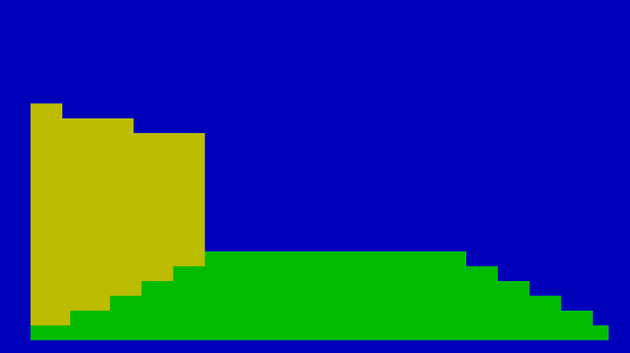

- Generated by
 1.8.15
1.8.15
|
3D Maze Game
|
This is a game that uses a full 3D rendering engine that runs on an embedded processor. The goal is to get to the center of a maze by moving down hallways to reach the green square on the floor. The controls are W, A, S, D, <, and > for forward, left, backward, right, rotate left, and rotate right.
This is an example of some of the walls in the game. All planes are made of two triangles that appear seamless in the rendering.
Given that the render engine is providing most of the work, the game boils down to moving the location of the camera around a scene. The end condition simply checks if the position of the camera is inside the green floor square. It has a callback that listens to the keyboard inputs from the user to both move and rotate the camera. Every time one of these actions is performed, the scene is rendered again. To save time, no frames are rendered between keyboard events as there are no separately moving elements in the game. If there were, the game should be set to render frames as fast as possible.
The render engine takes direct control of the UART output, which means that part of the frame time is waiting for the UART to transmit. The faster the UART baudrate is, the faster the engine will go. Additionally, the fewer triangles there are in a scene, the faster it will render. The maze was originally going to be bigger, but the processor ran out of resources to effectively pull this off (in addition to increasing how long a frame took to render). Rendering is broken up into two steps, one populates the framebuffer with the color data, while the other step outputs this framebuffer to the console.
Wall collision has not been implemented, so the player could just walk through walls instead of playing the game.
The render engine has many improvements that could be done, such as increasing the performance (even on the powerful processor I used, it struggled to render 100+ triangles at a good framerate). There were also shortcuts that were taken in the rendering process that should be fully fleshed out if this was to be used further. These sometimes produced results that made it look like you could see through some walls. Sending the entire framebuffer each time is a resource intensive task, so if there are not many changes between two framebuffers, a delta framebuffer could be calculated that only changes certain pixels.
1.8.15